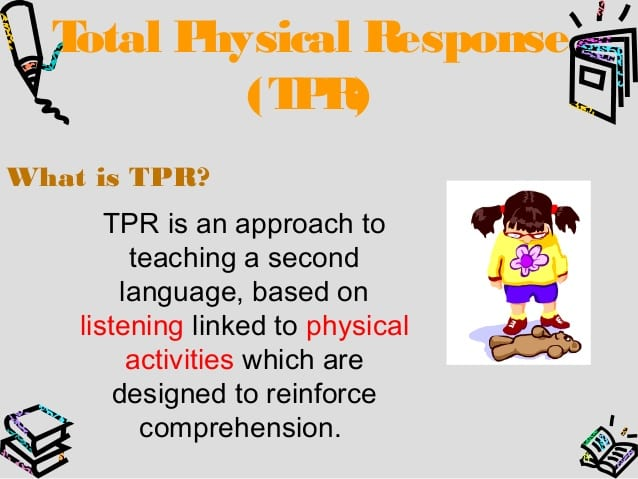

Animals
Farm Animals | Lesson Plan
In this farm animals lesson plan, students will learn the names of farm animals in English. This lesson plan is suitable for lessons teaching farm animals to kids. The below lesson plan is complete with all the games, activities, and resources you need to teach farm animals to kids.
Warm Up
It depends ont the kids age and previous knowledge of English, for older kids (Age 5-6)
are likely to be familiar with some animals and animal names.
They may even know that some animals can be found on a farm, and other animals, such as zoo animals,
are not usually found on a farm. To warm up and activate students’
existing knowledge about animals, ask students to tell you what animals they already know and write the animal
names on the board, Or you can show them some flashcards.
"in the below powerpoint you will find everything you need" .
Next , ask students to identify which of the animals that you have written/shown on the board can be found on a farm. Then, ask students again if they can think of any more farm animals. Another fun way to elicit the farm animal names from students is to make the farm animal sounds and ask students to guess what animal it is. For example, you might make the sound “moo” to elicit ‘cow’, or “oink” to elicit ‘pig’.
Once you have a list of farm animals on the board that students already know, it’s time to listen to a fun farm animals song. This song by Super Simple Songs is a great ‘Old Macdonald’ song to learn the farm animal names and sounds.
-
Let the kids watch the song first No interference required at this stage. So, they get an idea about the topic they are learning
-
Teach the song using TPR , Also use an audio version
Convert to audio Here
.Don't let the students watch a video while you are teaching them TPR / dance, they will easily be distracted
-
Repeat 2 OR 3 times and let the students repeat after you
-
Perform and sing together
Practice
say the names of the farm animals out loud and ask students to repeat after you. Then, ask students to say each farm animal name on their own. A perfect approach is playing Pass & Say Hand a flashcard to one student and ask him to say and pass to the next etc... game
"Remember to correct their pronunciation, specially the first ones"
Games
-
You say the animal's name and the kids do the animal sound ex: "cow" "Mooo".
-
Act Like, You say the animal's name and students act like For example: Rabbit.
Wrap up
To Wrap up , show a flashcard or a picture from PPT ,and ask the students What is it? it is a cow.
GoodBye song
A GoodBye song is a very important part of your lesson, Make time for it.